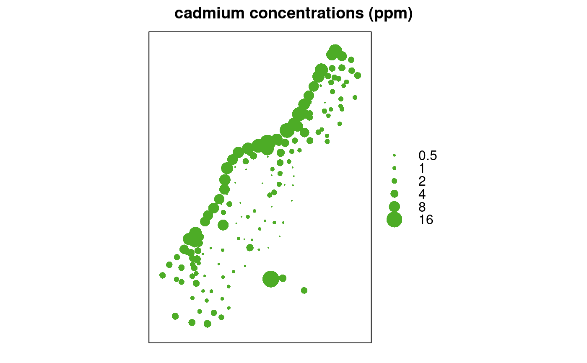
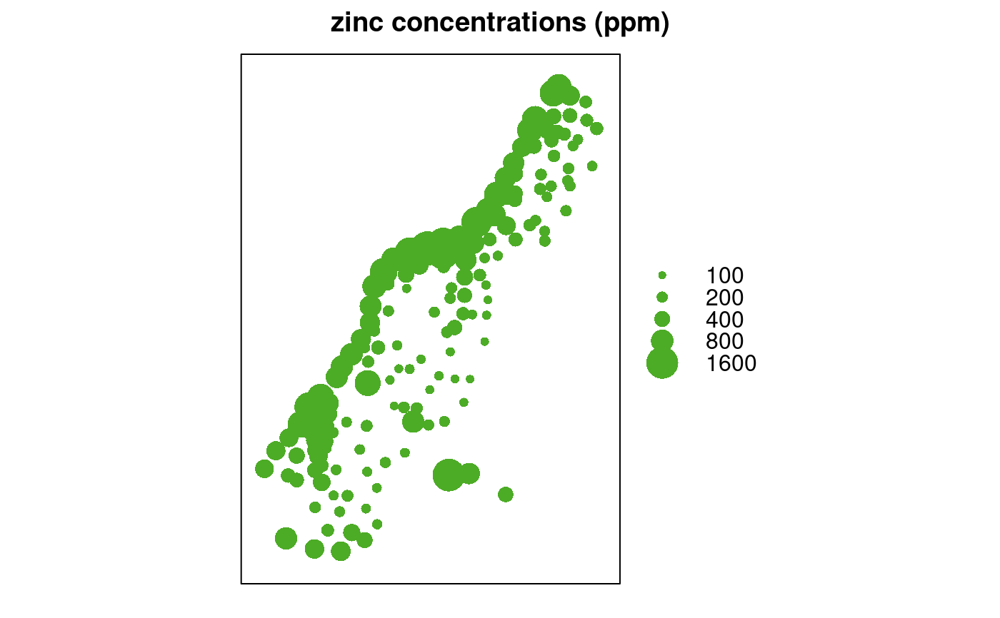

bubble.RdCreate a bubble plot of spatial data, with options for bicolour residual plots (xyplot wrapper)
bubble(obj, zcol = 1, ..., fill = TRUE, maxsize = 3, do.sqrt = TRUE, pch, col = c("#d01c8b", "#4dac26"), key.entries = quantile(data[,zcol]), main, identify = FALSE, labels = row.names(data.frame(obj)), key.space = "right", scales = list(draw = FALSE), xlab = NULL, ylab = NULL, panel = panel.bubble, sp.layout = NULL, xlim = bbexpand(bbox(obj)[1,], 0.04), ylim = bbexpand(bbox(obj)[2,], 0.04))
| obj | object of, or extending, class SpatialPointsDataFrame or SpatialGridDataFrame, see coordinates or SpatialPointsDataFrame; the object knows about its spatial coordinates |
|---|---|
| zcol | z-variable column name, or column number after removing spatial coordinates from x@data: 1 refers to the first non-coordinate column |
| fill | logical; if TRUE, filled circles are plotted (pch = 16), else open circles (pch = 1); the pch argument overrides this |
| maxsize |
|
| do.sqrt | logical; if TRUE the plotting symbol area (sqrt(diameter)) is proportional to the value of the z-variable; if FALSE, the symbol size (diameter) is proportional to the z-variable |
| pch | plotting character |
| col | colours to be used; numeric vector of size two: first value is for negative values, second for positive values. Default colors: 5-class PiYG from colorbrewer.org. |
| key.entries | the values that will be plotted in the key; by default the five quantiles min, q.25, median q.75, max |
| main | main plotting title |
| identify | logical; if true, regular |
| labels | labels argument passed to |
| ... | arguments, passed to |
| key.space | location of the key |
| scales | scales argument as passed to xyplot |
| xlab | x-axis label |
| ylab | y-axis label |
| panel | panel function used |
| sp.layout | possible layout items; see spplot |
| xlim | x axis limit |
| ylim | y axis limit |
returns (or plots) the bubble plot; if identify is TRUE, returns
the indexes (row numbers) of identified points.
data(meuse) coordinates(meuse) <- c("x", "y") # promote to SpatialPointsDataFrame bubble(meuse, "cadmium", maxsize = 2.5, main = "cadmium concentrations (ppm)", key.entries = 2^(-1:4))bubble(meuse, "zinc", main = "zinc concentrations (ppm)", key.entries = 100 * 2^(0:4))